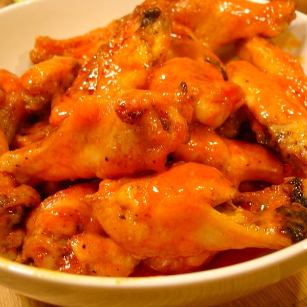

Buffalo Wings

Ingredients
- 12 chicken wings
- 3 ounces butter
- 1 small clove garlic, minced
- 1/4 cup hot sauce
- 1/2 teaspoon salt
Recipe
- Place a saucepan with steamer basket in one inch of water and bring to a boil.
- Remove the tips of the wings and discard, and using a knife separate the wings at the joint.
- Place the wings into the steamer basket, cover, reduce the heat to medium and steam for 10 minutes.
- Lay the wings on a cooling rack and place in the fridge for one hour.
- Preheat oven to 220 degrees celcius.
- Roast on the middle rack of the oven for 20 minutes. Turn the wings over and cook another 20 minutes or until meat is cooked through and the skin is golden brown.
- Melt the butter in a small bowl along with the garlic.
- Pour this, along with the hot sauce and salt into a bowl large enough to mix with the wings.
- Mix the wings with the spicy sauce, serve and enjoy
Information and Allergies
Care must be taken with dish as it includes bones which are a choking hazard. People with allergies to any of the ingredients above should steer clear of this dish as it could be a health risk.